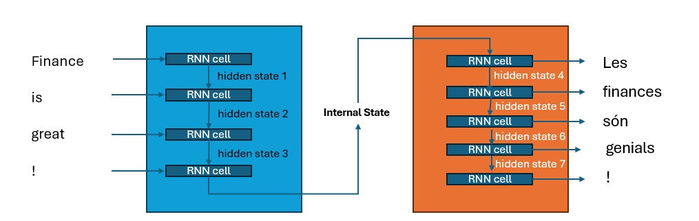

Limitations of traditional embeddings
- Do you recall how the word bank can refer to a financial institution or the side of a river? Traditional word embeddings struggle with such polysemy, as they assign a single vector representation to each word, regardless of context.
- The only way to address this is to use context-sensitive embeddings, which means that words need to talk to each other.
- Letting words talk to each other was first explored in the context of machine translation using RNN (Recurrent Neural Networks).
- However. it was not until the introduction of the Transformer architecture that we could effectively let words talk to each other in a scalable way. We will explore this in the next section.
Some Definitions
- Recurrent Neural Networks (RNNs): A type of neural network designed for sequential data, where the output from previous steps is fed as input to the current step.
- LSTM (Long Short-Term Memory): A type of RNN that can learn long-term dependencies, making it suitable for tasks like language modeling and translation.
- Prior to transformers, RNN architectures were the state of the art. They contained a feedback* loop in the network connections that allows information to propagate, making it ideal for sequential data like text.
- A crutial feature of these networks is that the input and output do not have to be the same length.
Basic RNNs
- Consider a sequence of observations of arbitrary length and a prediction of the next observation in the sequence. (E.g. bond quotes in TRACE)
- A basic RNN would take the previous observations as input, process it through a hidden layer, and output a prediction for the next return.
- A RNN Cell is a simple unit that takes an input and the previous hidden state, processes them, and outputs a new hidden state and an output.

Unfolding the RNN
- The RNN can be unfolded over time, where each time step corresponds to a new observation in the sequence.

More on RNNs
Recurrent Neural Networks (RNNs) extend traditional neural networks by allowing them to process sequences of variable length, unlike vanilla or convolutional networks which operate on fixed-size inputs and outputs.
RNNs can handle diverse tasks such as sequence-to-sequence (e.g., machine translation), sequence-to-one (e.g., sentiment analysis), one-to-sequence (e.g., image captioning), and synced input/output sequences (e.g., video frame labeling).
The core mechanism of RNNs is the state vector, which evolves through a fixed, learned transformation that combines past information (state) with new input at each time step.
RNNs are more computationally expressive than feedforward networks: they can be seen as running a learned program, and are theoretically Turing-complete.
Even when inputs and outputs are fixed-size vectors, RNNs can still be used to process them sequentially — for example, by learning to attend over parts of an image or generating images step by step.
Different types of RNNs

If you are interested in all that RNNs can do, I recommend reading Andrej Karpathy’s blog post on the effectiveness of RNNs.
The Encoder-Decoder Framework
- For most applications we will focus on mapping a sequence of inputs to a sequence of outputs. In a RNN the encoder encodes the information from the input sequence into a numerical representation, usually encoded in the last hidden state.
- In the *The capital of France is example, the encoded representation is the last hidden sstate.
- The decoder then takes this representation and generates the output sequence, one token at a time.
Encoder-Decoder blocks for machine translation, e.g. english to catalan

Limitations of the traditional Encoder-Decoder framework
- Although elegant in its simplicity, one weakness is that the final hidden state of the encoder creates an information bottleneck. A single state needs to be able to represent the meaning of the whole input sequence.
- This is particularly challenging for long sequences.
- What if we give access to the decoder to all the hidden states of the encoder?
- This is the idea behind the attention mechanism, let RNN cells in the decoder pay attention to all the hidden states of the encoder, not just the last one.
Attention Mechanisms

- The idea behind attention is to give the decoder access to the hidden states of the encoder.
- However, using all the states at the same time would create a huge computational burden, so we need to weight the hidden states of the encoder.
- These weights are learned during training and allow the decoder to focus on the most relevant parts of the input sequence.
- This general attention mechanism is also referred as cross-attention.
- A big limitation is that the attention mechanism is still sequential, meaning that the decoder needs to process the input sequence one word at a time.